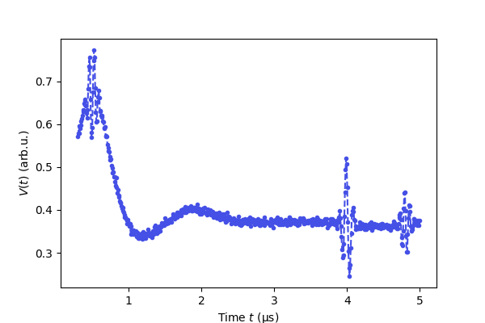
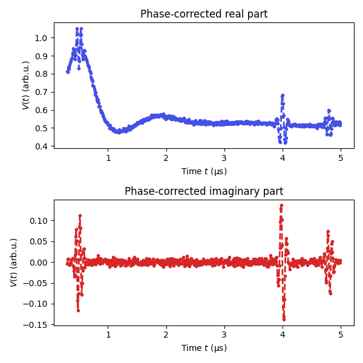
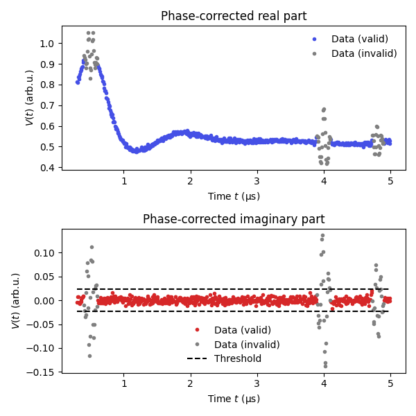
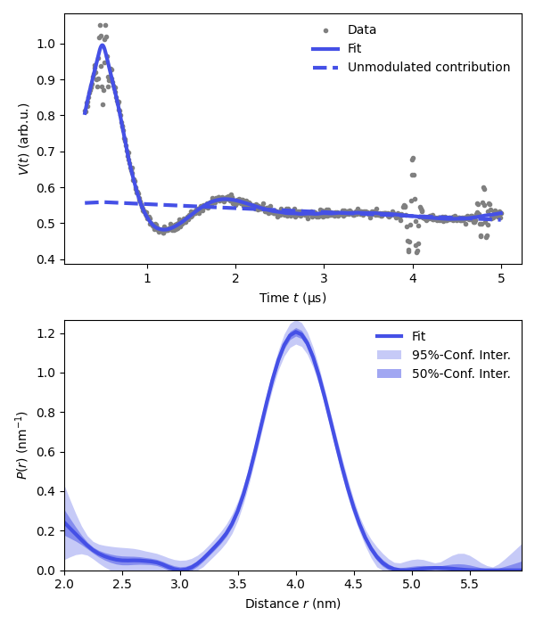

<!DOCTYPE html>

<html lang="en">
  <head>
    <meta charset="utf-8" />
    <meta name="viewport" content="width=device-width, initial-scale=1.0" /><meta name="generator" content="Docutils 0.17.1: http://docutils.sourceforge.net/" />

    <title>Analyzing data with crossing echoes robustly &#8212; DeerLab</title>
    
  <link href="../../_static/css/theme.css" rel="stylesheet">
  <link href="../../_static/css/index.ff1ffe594081f20da1ef19478df9384b.css" rel="stylesheet">

    
  <link rel="stylesheet"
    href="../../_static/vendor/fontawesome/5.13.0/css/all.min.css">
  <link rel="preload" as="font" type="font/woff2" crossorigin
    href="../../_static/vendor/fontawesome/5.13.0/webfonts/fa-solid-900.woff2">
  <link rel="preload" as="font" type="font/woff2" crossorigin
    href="../../_static/vendor/fontawesome/5.13.0/webfonts/fa-brands-400.woff2">

    
      

    
    <link rel="stylesheet" type="text/css" href="../../_static/pygments.css" />
    <link rel="stylesheet" type="text/css" href="../../_static/css/blank.css" />
    <link rel="stylesheet" type="text/css" href="../../_static/plot_directive.css" />
    <link rel="stylesheet" type="text/css" href="../../_static/copybutton.css" />
    <link rel="stylesheet" type="text/css" href="../../_static/gallery.css" />
    <link rel="stylesheet" type="text/css" href="../../_static/gallery-binder.css" />
    <link rel="stylesheet" type="text/css" href="../../_static/gallery-dataframe.css" />
    <link rel="stylesheet" type="text/css" href="../../_static/gallery-rendered-html.css" />
    <link rel="stylesheet" type="text/css" href="../../_static/theme_override.css" />
    
  <link rel="preload" as="script" href="../../_static/js/index.be7d3bbb2ef33a8344ce.js">

    <script data-url_root="../../" id="documentation_options" src="../../_static/documentation_options.js"></script>
    <script src="../../_static/jquery.js"></script>
    <script src="../../_static/underscore.js"></script>
    <script src="../../_static/doctools.js"></script>
    <script src="../../_static/clipboard.min.js"></script>
    <script src="../../_static/copybutton.js"></script>
    <link rel="shortcut icon" href="../../_static/favicon.ico"/>
    <link rel="index" title="Index" href="../../genindex.html" />
    <link rel="search" title="Search" href="../../search.html" />
    <link rel="next" title="Simulating polarization effects on low-temperature DEER" href="../advanced/ex_simulating_oop.html" />
    <link rel="prev" title="Global fitting of multiple different DEER signals" href="ex_global_different_deer.html" />
    <meta name="viewport" content="width=device-width, initial-scale=1" />
    <meta name="docsearch:language" content="en">
    

    <!-- Google Analytics -->
    
  </head>
  <body data-spy="scroll" data-target="#bd-toc-nav" data-offset="80">
    
    <div class="container-fluid" id="banner"></div>

    
    <nav class="navbar navbar-light navbar-expand-lg bg-light fixed-top bd-navbar" id="navbar-main"><div class="container-xl">

  <div id="navbar-start">
    
    

<a class="navbar-brand" href="../../index.html">
  
</a>


    
  </div>

  <button class="navbar-toggler" type="button" data-toggle="collapse" data-target="#navbar-collapsible" aria-controls="navbar-collapsible" aria-expanded="false" aria-label="Toggle navigation">
    <span class="navbar-toggler-icon"></span>
  </button>

  
  <div id="navbar-collapsible" class="col-lg-9 collapse navbar-collapse">
    <div id="navbar-center" class="mr-auto">
      
      <div class="navbar-center-item">
        <div class="container-fluid  px-0">
  
    <div class="navbar-collapse collapse navbar-collapse" id="navbar-collapsible">
      <ul class="navbar-nav mr-auto">
        <li class="nav-item">
          <a class="nav-link nav-link" href="../../installation.html">Installation</a>
        </li>

        <li class="dropdown">
          <a class="dropbtn" href="../../user_guide.html" id="navbarDropdown" role="button" data-toggle="dropdown" aria-haspopup="true" aria-expanded="false">User Guide</a>
          <div class="dropdown-content" aria-labelledby="navbarDropdown">
              <a class="nav-dropdown-item dropdown-item" href="../../basics.html">Basics</a>
              <a class="nav-dropdown-item dropdown-item" href="../../getting_started.html">Getting Started</a>
              <a class="nav-dropdown-item dropdown-item" href="../../dipolar_guide_modeling.html">Modeling</a>
              <a class="nav-dropdown-item dropdown-item" href="../../dipolar_guide_fitting.html">Fitting</a>
              <a class="nav-dropdown-item dropdown-item" href="../../theory.html">Theory</a>
          </div>
        </li>

        <li class="dropdown">
            <a class="dropbtn" href="../../advanced_guide.html" id="navbarDropdown" role="button" data-toggle="dropdown" aria-haspopup="true" aria-expanded="false">Advanced Guides</a>
            <div class="dropdown-content" aria-labelledby="navbarDropdown">
                <a class="nav-dropdown-item dropdown-item" href="../../modeling_guide.html">Modeling Guide</a>
                <a class="nav-dropdown-item dropdown-item" href="../../fitting_guide.html">Fitting Guide</a>
                <a class="nav-dropdown-item dropdown-item" href="../../uncertainty_guide.html">Uncertainty Guide</a>
            </div>
          </li>

        <li class="nav-item">
          <a class="nav-link nav-link" href="../../examples.html">Examples</a>
        </li>

        <li class="nav-item">
          <a class="nav-link nav-link" href="../../modelsref.html">Models</a>
        </li>

        
        <li class="nav-item">
            <a class="nav-link nav-link" href="../../reference.html">Reference Index</a>
          </li>

        <li class="dropdown">
          <a class="dropbtn nav-link dropdown-toggle" href="../../more.html" id="navbarDropdown" role="button" data-toggle="dropdown" aria-haspopup="true" aria-expanded="false">More</a>
          <div class="dropdown-content" aria-labelledby="navbarDropdown">
              <a class="nav-dropdown-item dropdown-item" href="../../changelog.html">Release Notes</a>
              <a class="nav-dropdown-item dropdown-item" href="../../publications.html">Publications</a>
              <a class="nav-dropdown-item dropdown-item" href="../../contributing.html">Contributing</a>
              <a class="nav-dropdown-item dropdown-item" href="../../support.html">Support</a>
              <a class="nav-dropdown-item dropdown-item" href="../../license.html">License</a>
              <a class="nav-dropdown-item dropdown-item" href="https://github.com/JeschkeLab/DeerLab">GitHub</a>
              <a class="nav-dropdown-item dropdown-item" href="https://pypi.org/project/DeerLab/#history">Other Versions and Download</a>
          </div>
        </li>
      </ul>

    </div>
  </div>
      </div>
      
    </div>

    <div id="navbar-end">
      
      <div class="navbar-end-item">
        <form class="bd-search d-flex align-items-center" action="../../search.html" method="get">
  <i class="icon fas fa-search"></i>
  <input type="search" class="form-control" name="q" id="search-input" placeholder="Search the docs ..." aria-label="Search the docs ..." autocomplete="off" >
</form>
      </div>
      
    </div>
  </div>
</div>
    </nav>
    

    <div class="container-xl">
      <div class="row">
          
            
            <div class="col-12 col-md-1 col-xl-2 bd-sidebar no-sidebar"></div>
            
          

          
          <div class="d-none d-xl-block col-xl-2 bd-toc">
            
              
              <div class="toc-item">
                

<nav id="bd-toc-nav">
    
</nav>
              </div>
              
              <div class="toc-item">
                
              </div>
              
            
          </div>
          

          
          
            
          
          <main class="col-12 col-md-11 col-xl-8 py-md-5 pl-md-5 pr-md-4 bd-content" role="main">
              
              <div>
                
  <div class="sphx-glr-download-link-note admonition note">
<p class="admonition-title">Note</p>
<p>Click <a class="reference internal" href="#sphx-glr-download-auto-examples-intermediate-ex-crossing-echoes-masking-py"><span class="std std-ref">here</span></a>
to download the full example code</p>
</div>
<section class="sphx-glr-example-title" id="analyzing-data-with-crossing-echoes-robustly">
<span id="sphx-glr-auto-examples-intermediate-ex-crossing-echoes-masking-py"></span><h1>Analyzing data with crossing echoes robustly<a class="headerlink" href="#analyzing-data-with-crossing-echoes-robustly" title="Permalink to this headline">¶</a></h1>
<p>How to deal with the presence of crossing echoes in the data. Crossing echoes appear
as spurious peaks/oscillations in the data that cannot be accounted for by the model
constructed by dipolarmodel(). Their presence will thus distort the analysis and lead
to incorrect results.
To be able to analyze such datasets robustly DeerLab allows the definition of masks, i.e.
a list of True (keep data point) and False (ignore data point) values, to remove their influence
during the fit procedure without the need to remove them from the data or the model.
For crossing echoes, we can define such a mask robustly since their presence also affect the imaginary
part of the data, and we know that the imaginary part of the data should only contain white noise.
We can define a mask that ignores those data points whose imaginary part value exceeds several multiples
of the expected noise level in the data.
Once such a mask is constructed, the analysis can be executed as usual without any additional modifications.</p>
<div class="highlight-python notranslate"><div class="highlight"><pre><span></span><span class="c1"># Import the required libraries</span>
<span class="kn">import</span> <span class="nn">numpy</span> <span class="k">as</span> <span class="nn">np</span>
<span class="kn">import</span> <span class="nn">matplotlib.pyplot</span> <span class="k">as</span> <span class="nn">plt</span>
<span class="kn">import</span> <span class="nn">deerlab</span> <span class="k">as</span> <span class="nn">dl</span>
<span class="n">violet</span> <span class="o">=</span> <span class="s1">&#39;#4550e6&#39;</span>
</pre></div>
</div>
<div class="highlight-python notranslate"><div class="highlight"><pre><span></span><span class="c1"># Load the experimental data</span>
<span class="n">t</span><span class="p">,</span><span class="n">Vexp</span> <span class="o">=</span> <span class="n">dl</span><span class="o">.</span><span class="n">deerload</span><span class="p">(</span><span class="s1">&#39;../data/example_4pdeer_5.DTA&#39;</span><span class="p">)</span>

<span class="c1"># Experimental parameters</span>
<span class="n">tau1</span> <span class="o">=</span> <span class="mf">0.5</span>  <span class="c1"># First inter-pulse time delay, μs</span>
<span class="n">tau2</span> <span class="o">=</span> <span class="mf">4.5</span>  <span class="c1"># Second inter-pulse time delay, μs</span>
<span class="n">t0</span> <span class="o">=</span> <span class="mf">0.3</span>    <span class="c1"># Acquisition deadtime, μs</span>

<span class="c1"># Adjust for the deadtime</span>
<span class="n">t</span> <span class="o">=</span> <span class="n">t</span> <span class="o">-</span> <span class="n">t</span><span class="p">[</span><span class="mi">0</span><span class="p">]</span> <span class="o">+</span> <span class="n">t0</span>

<span class="c1"># Plot the real part of the raw data</span>
<span class="n">plt</span><span class="o">.</span><span class="n">figure</span><span class="p">(</span><span class="n">figsize</span><span class="o">=</span><span class="p">[</span><span class="mi">6</span><span class="p">,</span><span class="mi">4</span><span class="p">])</span>
<span class="n">plt</span><span class="o">.</span><span class="n">plot</span><span class="p">(</span><span class="n">t</span><span class="p">,</span><span class="n">Vexp</span><span class="o">.</span><span class="n">real</span><span class="p">,</span><span class="s1">&#39;.--&#39;</span><span class="p">,</span><span class="n">color</span><span class="o">=</span><span class="n">violet</span><span class="p">)</span>
<span class="n">plt</span><span class="o">.</span><span class="n">xlabel</span><span class="p">(</span><span class="s1">&#39;Time $t$ (μs)&#39;</span><span class="p">)</span>
<span class="n">plt</span><span class="o">.</span><span class="n">ylabel</span><span class="p">(</span><span class="s1">&#39;$V(t)$ (arb.u.)&#39;</span><span class="p">)</span>
<span class="n">plt</span><span class="o">.</span><span class="n">show</span><span class="p">()</span>
</pre></div>
</div>

<div class="highlight-python notranslate"><div class="highlight"><pre><span></span><span class="c1"># Perform phase correction, returning the phase-corrected imaginary part</span>
<span class="n">Vexp</span><span class="p">,</span><span class="n">Vim</span><span class="p">,</span><span class="n">_</span> <span class="o">=</span> <span class="n">dl</span><span class="o">.</span><span class="n">correctphase</span><span class="p">(</span><span class="n">Vexp</span><span class="p">,</span> <span class="n">full_output</span><span class="o">=</span><span class="kc">True</span><span class="p">,</span> <span class="n">offset</span><span class="o">=</span><span class="kc">True</span><span class="p">)</span>

<span class="c1"># Plot the phase corrected data</span>
<span class="n">plt</span><span class="o">.</span><span class="n">figure</span><span class="p">(</span><span class="n">figsize</span><span class="o">=</span><span class="p">[</span><span class="mi">6</span><span class="p">,</span><span class="mi">6</span><span class="p">])</span>
<span class="n">plt</span><span class="o">.</span><span class="n">subplot</span><span class="p">(</span><span class="mi">211</span><span class="p">)</span>
<span class="n">plt</span><span class="o">.</span><span class="n">plot</span><span class="p">(</span><span class="n">t</span><span class="p">,</span><span class="n">Vexp</span><span class="p">,</span><span class="s1">&#39;.--&#39;</span><span class="p">,</span><span class="n">lw</span><span class="o">=</span><span class="mi">2</span><span class="p">,</span><span class="n">color</span><span class="o">=</span><span class="n">violet</span><span class="p">)</span>
<span class="n">plt</span><span class="o">.</span><span class="n">xlabel</span><span class="p">(</span><span class="s1">&#39;Time $t$ (μs)&#39;</span><span class="p">)</span>
<span class="n">plt</span><span class="o">.</span><span class="n">ylabel</span><span class="p">(</span><span class="s1">&#39;$V(t)$ (arb.u.)&#39;</span><span class="p">)</span>
<span class="n">plt</span><span class="o">.</span><span class="n">title</span><span class="p">(</span><span class="s1">&#39;Phase-corrected real part&#39;</span><span class="p">)</span>
<span class="n">plt</span><span class="o">.</span><span class="n">subplot</span><span class="p">(</span><span class="mi">212</span><span class="p">)</span>
<span class="n">plt</span><span class="o">.</span><span class="n">plot</span><span class="p">(</span><span class="n">t</span><span class="p">,</span><span class="n">Vim</span><span class="p">,</span><span class="s1">&#39;.--&#39;</span><span class="p">,</span><span class="n">lw</span><span class="o">=</span><span class="mi">2</span><span class="p">,</span><span class="n">color</span><span class="o">=</span><span class="s1">&#39;tab:red&#39;</span><span class="p">)</span>
<span class="n">plt</span><span class="o">.</span><span class="n">xlabel</span><span class="p">(</span><span class="s1">&#39;Time $t$ (μs)&#39;</span><span class="p">)</span>
<span class="n">plt</span><span class="o">.</span><span class="n">ylabel</span><span class="p">(</span><span class="s1">&#39;$V(t)$ (arb.u.)&#39;</span><span class="p">)</span>
<span class="n">plt</span><span class="o">.</span><span class="n">title</span><span class="p">(</span><span class="s1">&#39;Phase-corrected imaginary part&#39;</span><span class="p">)</span>
<span class="n">plt</span><span class="o">.</span><span class="n">tight_layout</span><span class="p">()</span>
<span class="n">plt</span><span class="o">.</span><span class="n">show</span><span class="p">()</span>
</pre></div>
</div>

<div class="highlight-python notranslate"><div class="highlight"><pre><span></span><span class="c1"># Estimate the noise level in the data</span>
<span class="n">noiselevel</span> <span class="o">=</span> <span class="n">dl</span><span class="o">.</span><span class="n">noiselevel</span><span class="p">(</span><span class="n">Vim</span><span class="p">)</span>
<span class="c1"># Define the threshold for crossing echo outliers (some multiple of the noise level)</span>
<span class="n">masking_threshold</span> <span class="o">=</span> <span class="mi">4</span><span class="o">*</span><span class="n">noiselevel</span>

<span class="c1"># Construct the mask for the data, exclude data points</span>
<span class="c1"># corresponding to the crossing echoes</span>
<span class="n">mask</span> <span class="o">=</span> <span class="nb">abs</span><span class="p">(</span><span class="n">Vim</span><span class="p">)</span><span class="o">&lt;</span><span class="n">masking_threshold</span> <span class="c1"># Mask[i]=True implies that the i-th data point is valid</span>

<span class="c1"># (Optional)</span>
<span class="c1"># Mask out also two points around those already masked out to ensure</span>
<span class="c1"># all influence of the crossing echoes is removed</span>
<span class="n">n</span> <span class="o">=</span> <span class="mi">2</span>
<span class="n">mask</span><span class="p">[</span><span class="n">np</span><span class="o">.</span><span class="n">where</span><span class="p">(</span><span class="o">~</span><span class="n">mask</span><span class="p">)[</span><span class="mi">0</span><span class="p">]</span><span class="o">-</span><span class="n">n</span><span class="p">]</span> <span class="o">=</span> <span class="kc">False</span>
<span class="n">mask</span><span class="p">[</span><span class="n">np</span><span class="o">.</span><span class="n">where</span><span class="p">(</span><span class="o">~</span><span class="n">mask</span><span class="p">)[</span><span class="mi">0</span><span class="p">]</span><span class="o">+</span><span class="n">n</span><span class="p">]</span> <span class="o">=</span> <span class="kc">False</span>

<span class="c1"># Plot the masking</span>
<span class="n">plt</span><span class="o">.</span><span class="n">figure</span><span class="p">(</span><span class="n">figsize</span><span class="o">=</span><span class="p">[</span><span class="mi">6</span><span class="p">,</span><span class="mi">6</span><span class="p">])</span>
<span class="n">plt</span><span class="o">.</span><span class="n">subplot</span><span class="p">(</span><span class="mi">211</span><span class="p">)</span>
<span class="n">plt</span><span class="o">.</span><span class="n">plot</span><span class="p">(</span><span class="n">t</span><span class="p">[</span><span class="n">mask</span><span class="p">],</span><span class="n">Vexp</span><span class="p">[</span><span class="n">mask</span><span class="p">],</span><span class="s1">&#39;.&#39;</span><span class="p">,</span><span class="n">lw</span><span class="o">=</span><span class="mi">2</span><span class="p">,</span><span class="n">color</span><span class="o">=</span><span class="n">violet</span><span class="p">,</span><span class="n">label</span><span class="o">=</span><span class="s1">&#39;Data (valid)&#39;</span><span class="p">)</span>
<span class="n">plt</span><span class="o">.</span><span class="n">plot</span><span class="p">(</span><span class="n">t</span><span class="p">[</span><span class="o">~</span><span class="n">mask</span><span class="p">],</span><span class="n">Vexp</span><span class="p">[</span><span class="o">~</span><span class="n">mask</span><span class="p">],</span><span class="s1">&#39;.&#39;</span><span class="p">,</span><span class="n">lw</span><span class="o">=</span><span class="mi">2</span><span class="p">,</span><span class="n">color</span><span class="o">=</span><span class="s1">&#39;grey&#39;</span><span class="p">,</span><span class="n">label</span><span class="o">=</span><span class="s1">&#39;Data (invalid)&#39;</span><span class="p">)</span>
<span class="n">plt</span><span class="o">.</span><span class="n">xlabel</span><span class="p">(</span><span class="s1">&#39;Time $t$ (μs)&#39;</span><span class="p">)</span>
<span class="n">plt</span><span class="o">.</span><span class="n">ylabel</span><span class="p">(</span><span class="s1">&#39;$V(t)$ (arb.u.)&#39;</span><span class="p">)</span>
<span class="n">plt</span><span class="o">.</span><span class="n">title</span><span class="p">(</span><span class="s1">&#39;Phase-corrected real part&#39;</span><span class="p">)</span>
<span class="n">plt</span><span class="o">.</span><span class="n">legend</span><span class="p">(</span><span class="n">frameon</span><span class="o">=</span><span class="kc">False</span><span class="p">,</span><span class="n">loc</span><span class="o">=</span><span class="s1">&#39;best&#39;</span><span class="p">)</span>
<span class="n">plt</span><span class="o">.</span><span class="n">subplot</span><span class="p">(</span><span class="mi">212</span><span class="p">)</span>
<span class="n">plt</span><span class="o">.</span><span class="n">plot</span><span class="p">(</span><span class="n">t</span><span class="p">[</span><span class="n">mask</span><span class="p">],</span><span class="n">Vim</span><span class="p">[</span><span class="n">mask</span><span class="p">],</span><span class="s1">&#39;.&#39;</span><span class="p">,</span><span class="n">lw</span><span class="o">=</span><span class="mi">2</span><span class="p">,</span><span class="n">color</span><span class="o">=</span><span class="s1">&#39;tab:red&#39;</span><span class="p">,</span><span class="n">label</span><span class="o">=</span><span class="s1">&#39;Data (valid)&#39;</span><span class="p">)</span>
<span class="n">plt</span><span class="o">.</span><span class="n">plot</span><span class="p">(</span><span class="n">t</span><span class="p">[</span><span class="o">~</span><span class="n">mask</span><span class="p">],</span><span class="n">Vim</span><span class="p">[</span><span class="o">~</span><span class="n">mask</span><span class="p">],</span><span class="s1">&#39;.&#39;</span><span class="p">,</span><span class="n">lw</span><span class="o">=</span><span class="mi">2</span><span class="p">,</span><span class="n">color</span><span class="o">=</span><span class="s1">&#39;grey&#39;</span><span class="p">,</span><span class="n">label</span><span class="o">=</span><span class="s1">&#39;Data (invalid)&#39;</span><span class="p">)</span>
<span class="n">plt</span><span class="o">.</span><span class="n">xlabel</span><span class="p">(</span><span class="s1">&#39;Time $t$ (μs)&#39;</span><span class="p">)</span>
<span class="n">plt</span><span class="o">.</span><span class="n">ylabel</span><span class="p">(</span><span class="s1">&#39;$V(t)$ (arb.u.)&#39;</span><span class="p">)</span>
<span class="n">plt</span><span class="o">.</span><span class="n">title</span><span class="p">(</span><span class="s1">&#39;Phase-corrected imaginary part&#39;</span><span class="p">)</span>
<span class="n">plt</span><span class="o">.</span><span class="n">hlines</span><span class="p">(</span><span class="n">masking_threshold</span><span class="p">,</span><span class="nb">min</span><span class="p">(</span><span class="n">t</span><span class="p">),</span><span class="nb">max</span><span class="p">(</span><span class="n">t</span><span class="p">),</span><span class="n">color</span><span class="o">=</span><span class="s1">&#39;k&#39;</span><span class="p">,</span><span class="n">linestyles</span><span class="o">=</span><span class="s1">&#39;dashed&#39;</span><span class="p">,</span><span class="n">label</span><span class="o">=</span><span class="s1">&#39;Threshold&#39;</span><span class="p">)</span>
<span class="n">plt</span><span class="o">.</span><span class="n">hlines</span><span class="p">(</span><span class="o">-</span><span class="n">masking_threshold</span><span class="p">,</span><span class="nb">min</span><span class="p">(</span><span class="n">t</span><span class="p">),</span><span class="nb">max</span><span class="p">(</span><span class="n">t</span><span class="p">),</span><span class="n">color</span><span class="o">=</span><span class="s1">&#39;k&#39;</span><span class="p">,</span><span class="n">linestyles</span><span class="o">=</span><span class="s1">&#39;dashed&#39;</span><span class="p">)</span>
<span class="n">plt</span><span class="o">.</span><span class="n">legend</span><span class="p">(</span><span class="n">frameon</span><span class="o">=</span><span class="kc">False</span><span class="p">,</span><span class="n">loc</span><span class="o">=</span><span class="s1">&#39;best&#39;</span><span class="p">)</span>
<span class="n">plt</span><span class="o">.</span><span class="n">tight_layout</span><span class="p">()</span>
<span class="n">plt</span><span class="o">.</span><span class="n">show</span><span class="p">()</span>
</pre></div>
</div>

<div class="highlight-python notranslate"><div class="highlight"><pre><span></span><span class="c1"># Distance vector</span>
<span class="n">r</span> <span class="o">=</span> <span class="n">np</span><span class="o">.</span><span class="n">arange</span><span class="p">(</span><span class="mi">2</span><span class="p">,</span><span class="mi">6</span><span class="p">,</span><span class="mf">0.05</span><span class="p">)</span> <span class="c1"># nm</span>

<span class="c1"># Construct the dipolar signal model</span>
<span class="n">experiment</span> <span class="o">=</span> <span class="n">dl</span><span class="o">.</span><span class="n">ex_4pdeer</span><span class="p">(</span><span class="n">tau1</span><span class="p">,</span><span class="n">tau2</span><span class="p">,</span><span class="n">pathways</span><span class="o">=</span><span class="p">[</span><span class="mi">1</span><span class="p">,</span><span class="mi">2</span><span class="p">,</span><span class="mi">3</span><span class="p">])</span>
<span class="n">Vmodel</span> <span class="o">=</span> <span class="n">dl</span><span class="o">.</span><span class="n">dipolarmodel</span><span class="p">(</span><span class="n">t</span><span class="p">,</span><span class="n">r</span><span class="p">,</span><span class="n">experiment</span><span class="o">=</span><span class="n">experiment</span><span class="p">)</span>

<span class="c1"># Analyze the data while ignoring the crossing echoes</span>
<span class="n">results</span> <span class="o">=</span> <span class="n">dl</span><span class="o">.</span><span class="n">fit</span><span class="p">(</span><span class="n">Vmodel</span><span class="p">,</span><span class="n">Vexp</span><span class="p">,</span> <span class="n">mask</span><span class="o">=</span><span class="n">mask</span><span class="p">,</span> <span class="n">noiselvl</span><span class="o">=</span><span class="n">noiselevel</span><span class="p">)</span>

<span class="c1"># Display summary of fit results</span>
<span class="nb">print</span><span class="p">(</span><span class="n">results</span><span class="p">)</span>
</pre></div>
</div>
<p class="sphx-glr-script-out">Out:</p>
<div class="sphx-glr-script-out highlight-none notranslate"><div class="highlight"><pre><span></span>Goodness-of-fit:
========= ============= ================= ===================== =======
 Dataset   Noise level     Reduced 𝛘2      Residual autocorr.    RMSD
========= ============= ================= ===================== =======
   #1         0.006         24679.016             1.947          0.040
========= ============= ================= ===================== =======
Model hyperparameters:
==========================
 Regularization parameter
==========================
         1.97e-07
==========================
Model parameters:
=========== =========== ========================= ====== ======================================
 Parameter   Value       95%-Confidence interval   Unit   Description
=========== =========== ========================= ====== ======================================
 lam1        0.552       (0.552,0.552)                    Amplitude of pathway #1
 reftime1    0.500       (0.500,0.500)              μs    Refocusing time of pathway #1
 lam2        0.646       (0.646,0.646)                    Amplitude of pathway #2
 reftime2    5.005       (5.005,5.005)              μs    Refocusing time of pathway #2
 lam3        0.572       (0.572,0.572)                    Amplitude of pathway #3
 reftime3    -8.86e-06   (-8.86e-06,-8.86e-06)      μs    Refocusing time of pathway #3
 conc        50.001      (50.001,50.001)            μM    Spin concentration
 P           ...         (...,...)                 nm⁻¹   Non-parametric distance distribution
 P_scale     1.11e+07    (1.11e+07,1.11e+07)       None   Normalization factor of P
=========== =========== ========================= ====== ======================================
</pre></div>
</div>
<div class="highlight-python notranslate"><div class="highlight"><pre><span></span><span class="c1"># Extract fitted dipolar signal</span>
<span class="n">Vfit</span> <span class="o">=</span> <span class="n">results</span><span class="o">.</span><span class="n">model</span>

<span class="c1"># Extract fitted distance distribution</span>
<span class="n">Pfit</span> <span class="o">=</span> <span class="n">results</span><span class="o">.</span><span class="n">P</span>
<span class="n">Pci95</span> <span class="o">=</span> <span class="n">results</span><span class="o">.</span><span class="n">PUncert</span><span class="o">.</span><span class="n">ci</span><span class="p">(</span><span class="mi">95</span><span class="p">)</span>
<span class="n">Pci50</span> <span class="o">=</span> <span class="n">results</span><span class="o">.</span><span class="n">PUncert</span><span class="o">.</span><span class="n">ci</span><span class="p">(</span><span class="mi">50</span><span class="p">)</span>

<span class="c1"># Extract the unmodulated contribution</span>
<span class="k">def</span> <span class="nf">Vunmodfcn</span><span class="p">(</span><span class="n">lam1</span><span class="p">,</span><span class="n">lam2</span><span class="p">,</span><span class="n">lam3</span><span class="p">,</span><span class="n">reftime1</span><span class="p">,</span><span class="n">reftime2</span><span class="p">,</span><span class="n">reftime3</span><span class="p">,</span><span class="n">conc</span><span class="p">):</span>
    <span class="n">Lam0</span> <span class="o">=</span> <span class="n">results</span><span class="o">.</span><span class="n">P_scale</span><span class="o">*</span><span class="p">(</span><span class="mi">1</span><span class="o">-</span><span class="n">lam1</span><span class="o">-</span><span class="n">lam2</span><span class="o">-</span><span class="n">lam3</span><span class="p">)</span>
    <span class="n">Vunmod</span> <span class="o">=</span> <span class="n">Lam0</span><span class="o">*</span><span class="n">dl</span><span class="o">.</span><span class="n">bg_hom3d</span><span class="p">(</span><span class="n">t</span><span class="o">-</span><span class="n">reftime1</span><span class="p">,</span><span class="n">conc</span><span class="p">,</span><span class="n">lam1</span><span class="p">)</span>
    <span class="n">Vunmod</span> <span class="o">*=</span> <span class="n">dl</span><span class="o">.</span><span class="n">bg_hom3d</span><span class="p">(</span><span class="n">t</span><span class="o">-</span><span class="n">reftime2</span><span class="p">,</span><span class="n">conc</span><span class="p">,</span><span class="n">lam2</span><span class="p">)</span>
    <span class="n">Vunmod</span> <span class="o">*=</span> <span class="n">dl</span><span class="o">.</span><span class="n">bg_hom3d</span><span class="p">(</span><span class="n">t</span><span class="o">-</span><span class="n">reftime3</span><span class="p">,</span><span class="n">conc</span><span class="p">,</span><span class="n">lam3</span><span class="p">)</span>
    <span class="k">return</span> <span class="n">Vunmod</span>
<span class="n">Bfit</span> <span class="o">=</span> <span class="n">results</span><span class="o">.</span><span class="n">evaluate</span><span class="p">(</span><span class="n">Vunmodfcn</span><span class="p">)</span>

<span class="n">plt</span><span class="o">.</span><span class="n">figure</span><span class="p">(</span><span class="n">figsize</span><span class="o">=</span><span class="p">[</span><span class="mi">6</span><span class="p">,</span><span class="mi">7</span><span class="p">])</span>
<span class="n">violet</span> <span class="o">=</span> <span class="s1">&#39;#4550e6&#39;</span>
<span class="n">plt</span><span class="o">.</span><span class="n">subplot</span><span class="p">(</span><span class="mi">211</span><span class="p">)</span>
<span class="c1"># Plot experimental and fitted data</span>
<span class="n">plt</span><span class="o">.</span><span class="n">plot</span><span class="p">(</span><span class="n">t</span><span class="p">,</span><span class="n">Vexp</span><span class="p">,</span><span class="s1">&#39;.&#39;</span><span class="p">,</span><span class="n">color</span><span class="o">=</span><span class="s1">&#39;grey&#39;</span><span class="p">,</span><span class="n">label</span><span class="o">=</span><span class="s1">&#39;Data&#39;</span><span class="p">)</span>
<span class="n">plt</span><span class="o">.</span><span class="n">plot</span><span class="p">(</span><span class="n">t</span><span class="p">,</span><span class="n">Vfit</span><span class="p">,</span><span class="n">linewidth</span><span class="o">=</span><span class="mi">3</span><span class="p">,</span><span class="n">color</span><span class="o">=</span><span class="n">violet</span><span class="p">,</span><span class="n">label</span><span class="o">=</span><span class="s1">&#39;Fit&#39;</span><span class="p">)</span>
<span class="n">plt</span><span class="o">.</span><span class="n">plot</span><span class="p">(</span><span class="n">t</span><span class="p">,</span><span class="n">Bfit</span><span class="p">,</span><span class="s1">&#39;--&#39;</span><span class="p">,</span><span class="n">linewidth</span><span class="o">=</span><span class="mi">3</span><span class="p">,</span><span class="n">color</span><span class="o">=</span><span class="n">violet</span><span class="p">,</span><span class="n">label</span><span class="o">=</span><span class="s1">&#39;Unmodulated contribution&#39;</span><span class="p">)</span>
<span class="n">plt</span><span class="o">.</span><span class="n">legend</span><span class="p">(</span><span class="n">frameon</span><span class="o">=</span><span class="kc">False</span><span class="p">,</span><span class="n">loc</span><span class="o">=</span><span class="s1">&#39;best&#39;</span><span class="p">)</span>
<span class="n">plt</span><span class="o">.</span><span class="n">xlabel</span><span class="p">(</span><span class="s1">&#39;Time $t$ (μs)&#39;</span><span class="p">)</span>
<span class="n">plt</span><span class="o">.</span><span class="n">ylabel</span><span class="p">(</span><span class="s1">&#39;$V(t)$ (arb.u.)&#39;</span><span class="p">)</span>
<span class="c1"># Plot the distance distribution</span>
<span class="n">plt</span><span class="o">.</span><span class="n">subplot</span><span class="p">(</span><span class="mi">212</span><span class="p">)</span>
<span class="n">plt</span><span class="o">.</span><span class="n">plot</span><span class="p">(</span><span class="n">r</span><span class="p">,</span><span class="n">Pfit</span><span class="p">,</span><span class="n">color</span><span class="o">=</span><span class="n">violet</span><span class="p">,</span><span class="n">linewidth</span><span class="o">=</span><span class="mi">3</span><span class="p">,</span><span class="n">label</span><span class="o">=</span><span class="s1">&#39;Fit&#39;</span><span class="p">)</span>
<span class="n">plt</span><span class="o">.</span><span class="n">fill_between</span><span class="p">(</span><span class="n">r</span><span class="p">,</span><span class="n">Pci95</span><span class="p">[:,</span><span class="mi">0</span><span class="p">],</span><span class="n">Pci95</span><span class="p">[:,</span><span class="mi">1</span><span class="p">],</span><span class="n">alpha</span><span class="o">=</span><span class="mf">0.3</span><span class="p">,</span><span class="n">color</span><span class="o">=</span><span class="n">violet</span><span class="p">,</span><span class="n">label</span><span class="o">=</span><span class="s1">&#39;95%-Conf. Inter.&#39;</span><span class="p">,</span><span class="n">linewidth</span><span class="o">=</span><span class="mi">0</span><span class="p">)</span>
<span class="n">plt</span><span class="o">.</span><span class="n">fill_between</span><span class="p">(</span><span class="n">r</span><span class="p">,</span><span class="n">Pci50</span><span class="p">[:,</span><span class="mi">0</span><span class="p">],</span><span class="n">Pci50</span><span class="p">[:,</span><span class="mi">1</span><span class="p">],</span><span class="n">alpha</span><span class="o">=</span><span class="mf">0.5</span><span class="p">,</span><span class="n">color</span><span class="o">=</span><span class="n">violet</span><span class="p">,</span><span class="n">label</span><span class="o">=</span><span class="s1">&#39;50%-Conf. Inter.&#39;</span><span class="p">,</span><span class="n">linewidth</span><span class="o">=</span><span class="mi">0</span><span class="p">)</span>
<span class="n">plt</span><span class="o">.</span><span class="n">legend</span><span class="p">(</span><span class="n">frameon</span><span class="o">=</span><span class="kc">False</span><span class="p">,</span><span class="n">loc</span><span class="o">=</span><span class="s1">&#39;best&#39;</span><span class="p">)</span>
<span class="n">plt</span><span class="o">.</span><span class="n">autoscale</span><span class="p">(</span><span class="n">enable</span><span class="o">=</span><span class="kc">True</span><span class="p">,</span> <span class="n">axis</span><span class="o">=</span><span class="s1">&#39;both&#39;</span><span class="p">,</span> <span class="n">tight</span><span class="o">=</span><span class="kc">True</span><span class="p">)</span>
<span class="n">plt</span><span class="o">.</span><span class="n">xlabel</span><span class="p">(</span><span class="s1">&#39;Distance $r$ (nm)&#39;</span><span class="p">)</span>
<span class="n">plt</span><span class="o">.</span><span class="n">ylabel</span><span class="p">(</span><span class="s1">&#39;$P(r)$ (nm$^{-1}$)&#39;</span><span class="p">)</span>
<span class="n">plt</span><span class="o">.</span><span class="n">tight_layout</span><span class="p">()</span>
<span class="n">plt</span><span class="o">.</span><span class="n">show</span><span class="p">()</span>
</pre></div>
</div>

<p class="sphx-glr-timing"><strong>Total running time of the script:</strong> ( 8 minutes  53.409 seconds)</p>
<div class="sphx-glr-footer class sphx-glr-footer-example docutils container" id="sphx-glr-download-auto-examples-intermediate-ex-crossing-echoes-masking-py">
<div class="sphx-glr-download sphx-glr-download-python docutils container">
<p><a class="reference download internal" download="" href="../../_downloads/dcd4a2691e25cb79a15634e61be7822f/ex_crossing_echoes_masking.py"><code class="xref download docutils literal notranslate"><span class="pre">Download</span> <span class="pre">Python</span> <span class="pre">source</span> <span class="pre">code:</span> <span class="pre">ex_crossing_echoes_masking.py</span></code></a></p>
</div>
<div class="sphx-glr-download sphx-glr-download-jupyter docutils container">
<p><a class="reference download internal" download="" href="../../_downloads/18c2b4ea89218fe8bdeb02e0b0ee27a2/ex_crossing_echoes_masking.ipynb"><code class="xref download docutils literal notranslate"><span class="pre">Download</span> <span class="pre">Jupyter</span> <span class="pre">notebook:</span> <span class="pre">ex_crossing_echoes_masking.ipynb</span></code></a></p>
</div>
</div>
<p class="sphx-glr-signature"><a class="reference external" href="https://sphinx-gallery.github.io">Gallery generated by Sphinx-Gallery</a></p>
</section>


              </div>
              
              
              <!-- Previous / next buttons -->
<div class='prev-next-area'> 
    <a class='left-prev' id="prev-link" href="ex_global_different_deer.html" title="previous page">
        <i class="fas fa-angle-left"></i>
        <div class="prev-next-info">
            <p class="prev-next-subtitle">previous</p>
            <p class="prev-next-title">Global fitting of multiple different DEER signals</p>
        </div>
    </a>
    <a class='right-next' id="next-link" href="../advanced/ex_simulating_oop.html" title="next page">
    <div class="prev-next-info">
        <p class="prev-next-subtitle">next</p>
        <p class="prev-next-title">Simulating polarization effects on low-temperature DEER</p>
    </div>
    <i class="fas fa-angle-right"></i>
    </a>
</div>
              
          </main>
          

      </div>
    </div>
  
  <script src="../../_static/js/index.be7d3bbb2ef33a8344ce.js"></script>
<footer class="footer mt-5 mt-md-0">
  <div class="container">
    
    <div class="footer-item">
      <p class="copyright">
    &copy; Copyright 2019-2022, Luis Fábregas-Ibáñez, Stefan Stoll, and others.<br>
</p>
    </div>
    
    <div class="footer-item">
      <p class="sphinx-version">
Created using <a href="http://sphinx-doc.org/">Sphinx</a> 4.2.0.<br>
</p>
    </div>
    
  </div>
</footer>
  </body>
</html>